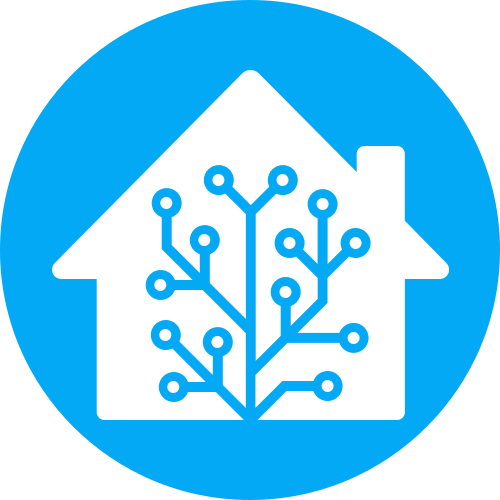

homelab-stack-compose
Stack self-hosted con servicios críticos y despliegues reproducibles.
System Administrator · Infraestructura · Automatización
Soy Alejandro Martín Pérez. Diseño y mantengo sistemas Linux confiables, despliegues con contenedores y entornos self-hosted listos para crecer.

Home AssistantHerramientas que uso a diario para entregar infraestructura estable.
Linux en general, redes y servicios core.
Docker, Docker Compose y despliegues reproducibles.
Bash, Python, PowerShell, tareas programadas y domótica.
Políticas, restore probado y hardening básico.
Repos públicos centrados en infra y automatización.
Stack self-hosted con servicios críticos y despliegues reproducibles.
Script para convertir vídeo a H.265 de forma sencilla y repetible.
Generación de certificados para entornos internos y servicios locales.
Laboratorio PXE/iPXE para despliegues y arranques por red.
Me enfoco en infraestructuras confiables con automatización y buen criterio operativo. Me gusta dejar las cosas documentadas, con backups probados y monitoreo visible.
Trabajo cómodo en entornos mixtos, homelab o producción, priorizando estabilidad, seguridad y procesos que se puedan repetir y escalar.